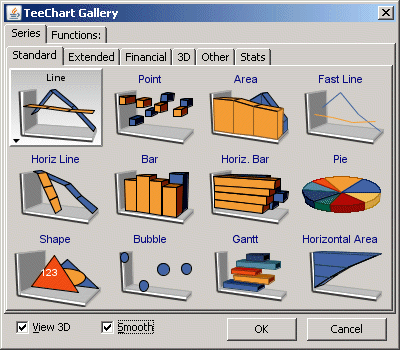

Next
|
|
Contents page Next |
Getting Started - building Charts and populating Data Series
Contents
Introduction
Building a Chart
Including TeeChart on a Form
Populate
the new data Series
The Chart Editor
Accessing the Chart Editor at Runtime
The Chart Series Gallery
Selecting a Series type to suit your needs
 Everything comes together to make the final Chart, with Chart axes being the interface between Chart and Series. A Series has data, and its values will influence the label characteristics of the Chart axes. The axes appearance, colours, grid frequency and label fonts may all be defined for the Chart before adding data Series. TeeChart will make a best estimate of most values to minimise the need for you to manually define Chart and Series methods. |
The steps in this tutorial highlight how easy it is to build a Chart from scratch and will introduce you to the Chart Editor to enable you, through later tutorials, to modify and further enhance the appearance and functionality of the Chart
at runtime. Good Charting !!

Select the first icon of the three and click and drag out to size TChart on a Form.
You will see TChart as a panel with some basic Chart features such as Axis and Title.
Series bar = new Bar(tChart1.getChart()); tChart1.getAxes().getBottom().setIncrement(1); bar.add(400, "pears", Color.Green); bar.add(500, "apples", Color.Red); bar.add(400, "bananas", Color.Yellow); bar.add(200, "oranges", Color.Orange);
The Series' Add method accepts 3 variables, Value, Label and Colour. The Add method thus assumes equal spacing of values on the Label axis (in this case the X-Axis). If your data contains 2 variables you may use the AddXY Method. Add another Command button to your project and put this code in it. Run the Project and add points using this code:
Random rnd = new Random();
Series bar = new Bar(tChart1.getChart());
if (bar.getCount() > 0)
{
// Increment X Axis value and add a new random point
bar.add((bar.getXValues().getLast() + rnd.nextInt(10)),
((bar.getYValues().getLast() / (bar.getYValues().getLast() - 1.0)) +
rnd.nextInt(10)), "Lemons", Color.GreenYellow);
}
else
{
// Add a new random point
bar.add(1, rnd.nextInt(10), "Lemons", Color.Yellow);
}
To access the Chart Editor select a command button and place it on your Form. Double click it and add the following line of code.
ChartEditor.editChart(tChart2.getChart());
Run the project and click the button to view the Chart Editor
The Chart Editor allows you access to most of the commonly used Chart properties at runtime.

To add a new Series, mouseclick on the Add... button and select the Series type from the Series Gallery. If after selecting a Series type you wish to change it later you may do so (with a few exceptions where the Series data content may be incompatible) by returning to the first Editor screen and selecting the Change.. button.

The Gallery consists of six tabbed pages:
 Standard Series
Standard Series
Standard Series types: those likely to be called upon most frequently.
 Financial
Financial
Financial Series include more specialised Financial Series types for financial applications.
 Stats
Stats
Stats Series include more specialised Statistical Series types for planning or mapping applications.
 Extended Series
Extended Series
Extended Series include more specialized Series types for Financial, planning or mapping applications.
 3D
3D
3D Series Types, those types that take three (X, Y, Z) rather than two (X, Y) variables.
 Other
Other
Miscellaneous Series types.
Select a Series type. For this exercise we will choose a Bar Series type. The Gallery will close and the new Series will be displayed in the first Chart Editor screen.
The last coded example generated new X and Y values. The X axis distance
between points may not be constant, depending on the values used, which may
cause overlapping of Bars in some cases. This would be desirable for some but
not all applications. Using the Chart Editor to Change the Series type (Enter
the Chart Editor at Design time and use the Change button on the first
page) to a LineSeries shows an alternative way to graphically represent data
with 2 variables. If your data contains more than 2 variables, there are other
Series Types suited to displaying the data. The following table shows the
composition of TeeChart Series types.
|
Series Type |
No. of variables |
Datasource Properties |
|
Standard types |
||
|
Line |
2 |
XValues, YValues, XLabel |
|
Horizontal Line |
2 |
XValues, YValues, XLabel |
|
Fast Line |
2 |
XValues, YValues, XLabel |
|
Bar |
2 |
XValues, YValues (called Bar), XLabel |
|
HorizBar |
2 |
XValues, YValues (called Bar), XLabel |
|
Area |
2 |
XValues, YValues, XLabel |
|
HorizArea |
2 |
XValues, YValues, XLabel |
|
Point |
2 |
Xvalues, YValues, XLabel |
|
Pie |
1 |
PieValues, XLabel |
|
Arrow |
4 |
StartXValues, StartYValues, XLabel, EndXValues, EndYValues |
|
Bubble |
3 |
Xvalues, YValues, XLabel, RadiusValues |
|
Gantt |
3 |
StartValues, EndValues, AY (Y axis level), AXLabel (Label optionally shown on Y-axis or as mark) |
|
Shape |
4 |
X0 (Top), Y0 (Bottom), X1 (Left), Y1 (Right) |
|
Subset of Extended Types |
||
|
Bezier |
2 |
XValues, YValues, XLabel |
|
Candle |
5 |
OpenValues, CloseValues, HighValues, LowValues, DateValues |
|
Contour |
3 |
XValues, YValues, XLabel, ZValues |
|
Error Bar |
3 |
XValues, YValues, XLabel, ErrorValues |
|
Point3D |
3 |
XValues, YValues, XLabel, ZValues |
|
Polar |
2 |
XValues, YValues, Labels (Polar has Angle and Radius) |
|
Radar |
2 |
XValues, YValues, Labels (Radar has Angle and Radius) |
|
3D Surface |
3 |
XValues, YValues, ZValues |
|
Volume |
2 |
XValues, YValues (VolumeValues), XLabel |
 |